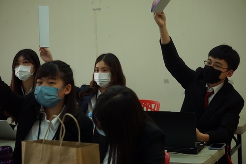

Irene Hsu
Enter bio here
Irene Hsu is an astute and dynamic professional with a deep passion for business analytics, poised to make a significant impact in the field. With a blend of academic excellence, hands-on experience, and a continuous thirst for knowledge, Irene stands out as an ideal candidate for roles in business analytics.
Early Academic Pursuits and Professional Foundations
Irene's journey began at the University of California, Riverside, where she is going to be pursued a Bachelor's degree in Statistics. Her academic path was marked by a strong focus on data interpretation and statistical models, laying the foundation for her future endeavors. During her time at Riverside, Irene actively participated in various workshops and seminars, not only to augment her learning but also to network with professionals and peers who shared her interests.
Transitioning to Professional Realms
Upon graduation, Irene embarked on her professional journey with a boutique consultancy firm specializing in data analysis and business intelligence. Here, she honed her skills in data mining, predictive modeling, and developing insights from complex datasets. Irene's role involved closely working with cross-functional teams to translate data findings into actionable business strategies. This experience was pivotal in shaping her understanding of how data analytics drives business decisions in real-world scenarios.
Expanding Horizons through Advanced Education
With a desire to further deepen her expertise, Irene pursued a Master's degree in Business Analytics from the New York University Stern School of Business. This program allowed her to delve deeper into advanced analytics techniques, big data technologies, and machine learning algorithms. Her capstone project, which focused on optimizing supply chain operations using predictive analytics, was highly commended for its practicality and innovation.
Practical Experience and Project Highlights
During her Master’s program, Irene interned with a leading tech firm in Silicon Valley. Here, she was part of a team that developed a predictive model to enhance customer retention strategies. The success of this project not only demonstrated her technical prowess but also her ability to work effectively in high-stakes, fast-paced environments.
Post-graduation, Irene joined a renowned multinational corporation as a Business Analyst. In this role, she was instrumental in several key projects, including:
Market Analysis and Expansion Strategy: Irene led a team to analyze market trends and customer behavior patterns, which helped the company identify new market opportunities and devise expansion strategies.
Operational Efficiency Improvement: She implemented a series of data-driven initiatives that significantly improved operational efficiencies, resulting in a 15% reduction in costs over two quarters.
Customer Insights and Engagement: Irene developed a comprehensive dashboard that provided deep insights into customer preferences, greatly enhancing the company’s marketing and customer engagement strategies.
Skills and Technical Proficiencies
Irene is proficient in a range of tools and technologies essential for business analytics, including SQL, Python, R, Tableau, and Power BI. Her ability to articulate complex data insights into understandable and actionable business language sets her apart.
Looking Towards the Future
As Irene seeks new opportunities in business analytics, she brings with her a rich blend of academic knowledge, professional experience, and a proven track record of delivering results. Her ability to seamlessly integrate data insights into business strategy makes her an invaluable asset to any team. Irene is not just seeking a job; she is looking to be a part of a forward-thinking organization where she can continue to grow, contribute, and make a tangible difference.
Enter bio here
Experience
Intern in Construction Company
• Learning Negotiation skills during all kinds of meetingd
• Being responsible to anaylize the current market date of the company
• Experience with HTML, CSS, Javascript, Photoshop
Public Relation in Model United Nation club
• Responsible for arranging events fundraiser
• Responsible for event planning
Teaching Assistant
• Ran sessions to help students learn how to code
• Reviewed and graded student coding projects
• Created educational content to help promote student education
• TA'd for over 400 students each academic quarter
Education
UC Riverside
Portfolio
